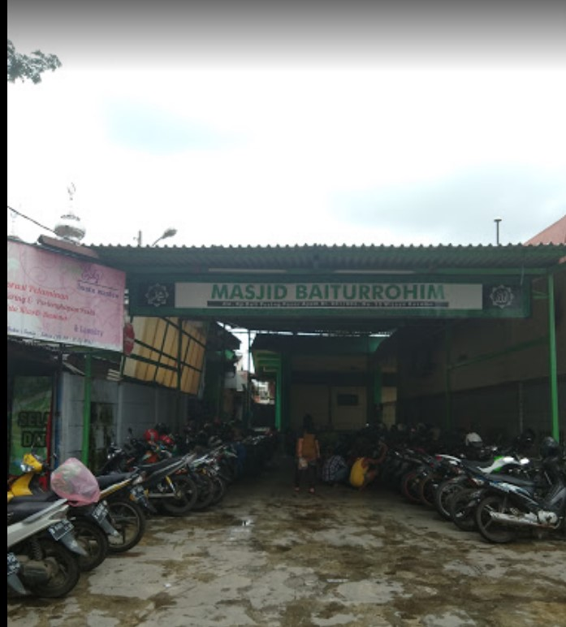

Visi Misi Remaja Masjid Baiturrohim RT.01/RW.03 Yang Mengandung Unsur Nilai Spritual dan Sosial
Visi misi remaja masjid Visi remaja masjid Baiturrohim adalah memiliki pandangan Islam ke depan tentang harapan digiatkan program remaja masjid Baiturrohim .Konsep visioner semacam ini harus jelas, supaya misi yang akan berjalan lebih tepat dan tidak menyimpang dari tujuan yang ada, antara lain:
1. Membumikan Islam di Lingkungan Rt.01/03 dan sekitarnya.
2.Menimbulkan Rasa Cinta Pada Islam disekitar Lingkungan Masjid Baiturrohim.
Misi remaja masjid misi remaja masjid bersesuaian dengan visinya dan kegiatan meramaikan masjid dengan aktivitas yang berkenaan dengan Akidah Islam sangat diperlukan. Kerja sama yang baik dari remaja-remaja yang tergabung dalam remaja masjid akan memudahkan program yang dijalankan berhasil. Hal ini membuat visi misi remaja masjid Baiturrohim tak terpisahkan, antara lain:
1. Membuat pemuda Muslim yang taat beribadah
2. Menjadikan Pemuda Muslim yang berjiwa sosial
3. Remaja muslim yang berakhlakul karimah